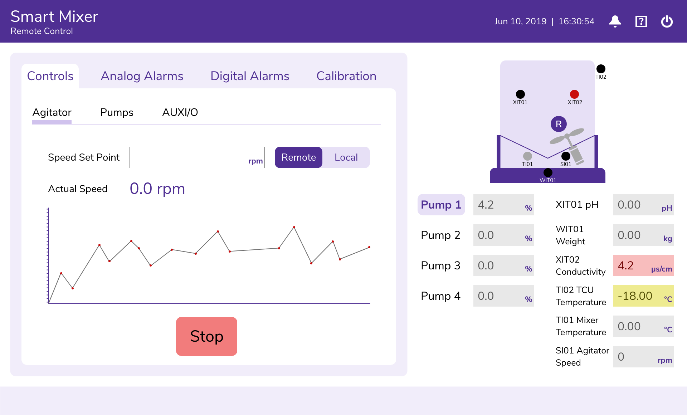

Smart Mixer
Infosys Client

The machinery includes an agitator that can be started and stopped. We proposed that the start/stop buttons replace one another depending on the current state of the machinery. We also felt that a graph representing current and past speeds of the agitator could be potentially useful.
The machinery also includes sensors for weight calibration. We proposed a more intuitive way of displaying the process that a user must take to perform the weight calibration. The progress bar provides a visual cue, showing users how far they have proceeded through calibration. "STEP 1-4" is also included for added clarity.

In the "STEP" section, instructional text is distinguished from text describing current machine activity by color. While the machine is active, controls that can not be operated are faded out to indicate to the user that they are inactive, such as the weight input and the "Calibrate" button.
The Challenge
Our client is a medical supply company, and has a wide range of machinery in their manufacturing facilities. Technicians often operate this machinery facilitated by interactive digital interfaces. Our goal is to create a machinery interface that would be clearly organized for both experienced and inexperienced technicians.
The Goal
Redesign the Smart Mixer interface in such a way that its information architecture is clear, sufficient space is allocated for application elements, and new users are able to proceed through the operation process.
Approach
This redesign project is still in-progress, and as of March 2020, the team has not yet received access to investigate the machinery itself nor to work directly with users. In order to begin the visual design process prior to having these opportunities, I analyzed the visual representation of information architecture as represented by the current model. The original interface being used by the client had two "layers" of tabs, as shown in my version. However, the primary tabs were placed above the page content, while the secondary tabs were placed below the page content. We felt that this was counterintuitive, and that it was unclear that the core page information pertained to the secondary tab, within the first tab.
The Outcome
Our next step is to receive access to interactive demonstrations of the machinery while in use. We would also like to connect with the operators of this machinery, so we can contextualize its use in their everyday work responsibilities, their level of experience, the training they have received, and the customizable information they may or may not input into the interface.